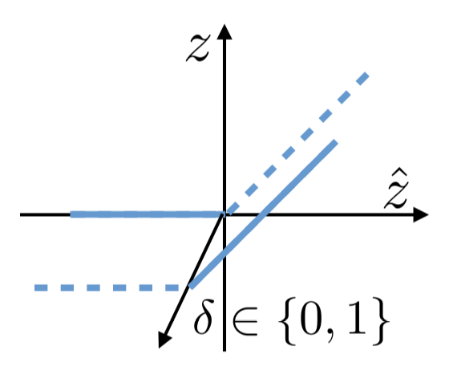

|
Projects
I am interested in deep neural networks from both a fundamental and applied perspective.
My current interests are mostly focused on production machine learning and working in the small-data regime (e.g., medical images).
|
|
|
AppDx® AI Reader
James Dorricott, Neeraj Adsul
Abingdon Health, 2021 - Present
strategic update / UK patent
AppDx® uses real-time object detection and image classification algorithms to automate the visual reading of lateral flow rapid diagnostic tests. The deep learning software operates on-device and can be integrated into healthcare apps using the AppDx® SDK.
|
|

|
Advanced Input Domain Splitting for Neural Network Verification
James Dorricott, Elena Botoeva
MSc AI Individual Project, 2020
Input domain splitting is an effective technique for the verification of neural networks with high-dimensional inputs (e.g., images). By encoding a split as a mixed integer program, one can find an optimal split that reduces the complexity of the verficiation problem.
|
|
|
Anatomical Landmark Detection and Demonstration Interface
James Dorricott, Alex Gaskell, Maleakhi Wijaya, Harry Coppock, Olle Nilsson, Faidon Mitzalis
MSc AI Software Engineering Project, 2020
code & demo
The Anatomical Landmark Detection and Demonstration Interface (ALaDDIn) is a reinforcement learning framework and front-end system for interacting with artifical landmark detection agents, logging demonstration data, and accelerating agent learning.
|
|